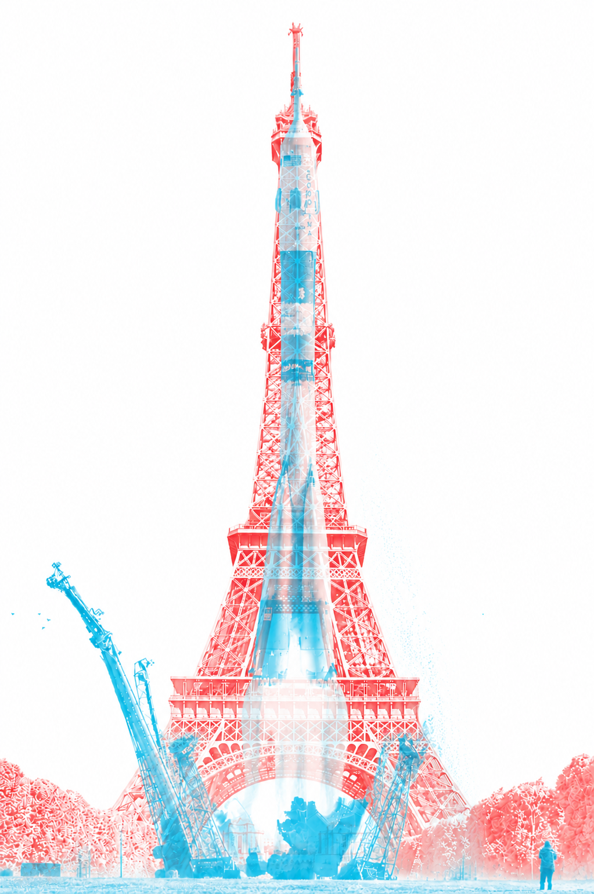
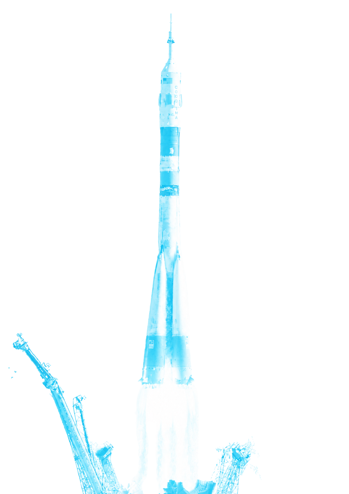
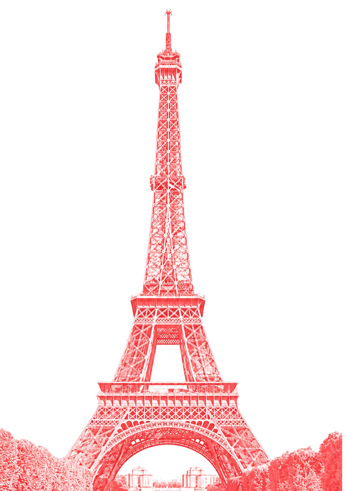

CHROMATIC CONTRAST
An interactive simulation exploring how coloured filters alter perception and reveal hidden visual information.



COMBINED IMAGE
An interactive simulation exploring how coloured filters alter perception and reveal hidden visual information.


